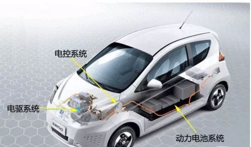
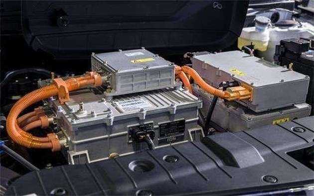

主页
1.1.
前言
1.2.
汽车概述
1.3.
汽车通用逻辑
1.4.
汽车分类
1.5.
燃油车
1.6.
电动车
1.7.
氢能车
1.8.
自动驾驶
1.8.1.
不同等级和常见功能
1.8.1.1.
TJA交通拥堵辅助系统
1.8.2.
硬件
1.8.2.1.
摄像头
1.8.2.2.
毫米波雷达
1.8.2.3.
激光雷达
1.8.2.4.
汽车芯片
1.8.3.
软件
1.8.3.1.
操作系统
1.8.3.2.
数据
1.9.
附录
1.9.1.
参考资料
本书使用 GitBook 发布
电动车
电动车
分类
组成
电动车的三大件 = 三电系统 ：电机、电控、电池
架构

原因
三电系统的成本占据整辆纯电动车总成本的75%以上
超过90%的纯电动车机件故障，也都是由三电系统引起
对比
电动车
燃油车
人
电机
发动机
心脏
电控
ECU=动力控制单元=发动机控制器
大脑
电池
汽油=油箱
血液+肌肉
详解
电机 = 电驱
电控
含义
狭义：VCU
广义：VCU + BMS + 等
作用：采集油门、制动等多种信号，并作出相应判断和发出指令
架构
电池

results matching "
"
No results matching "
"